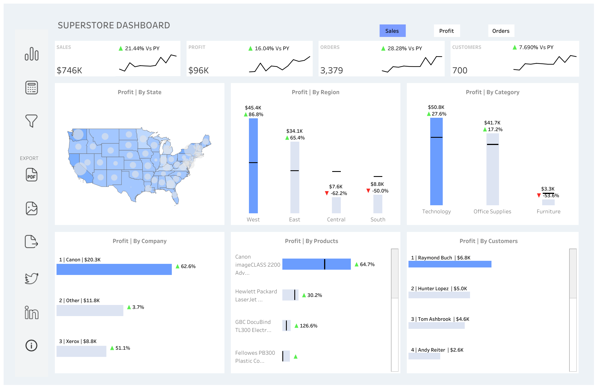
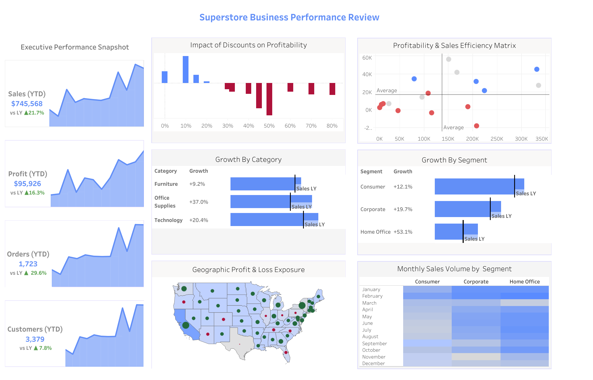
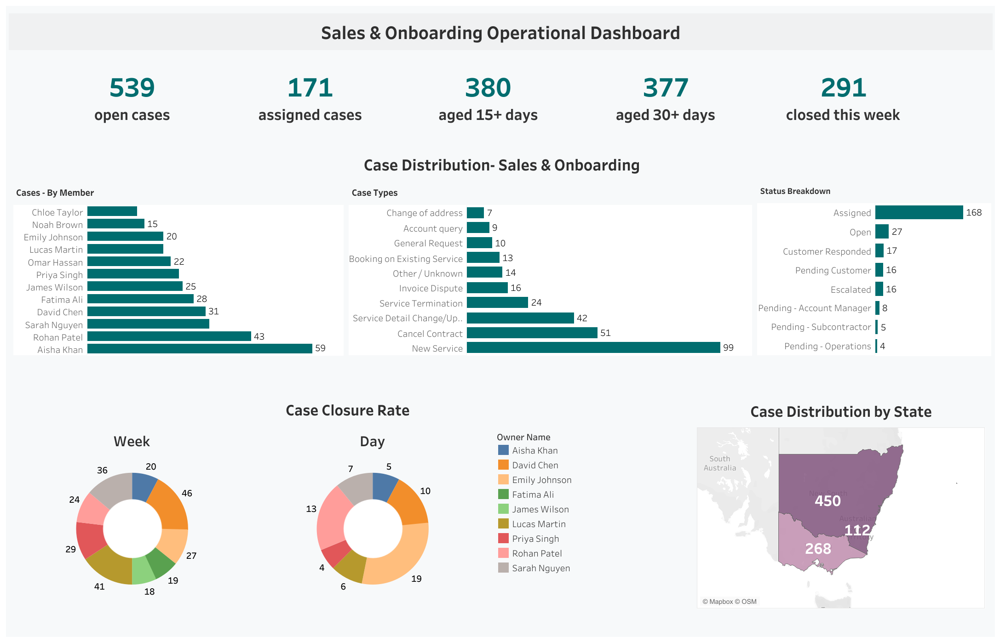
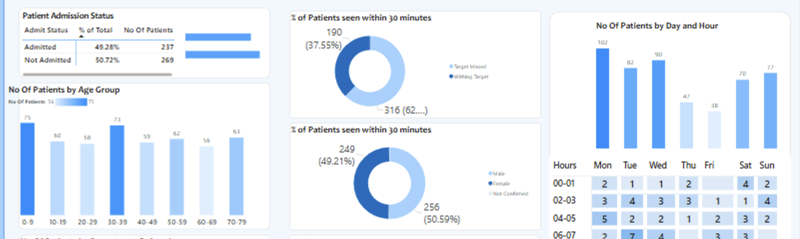

01
Stakeholder Translation
Sales, onboarding, operations, and founders get reporting shaped around their actual decisions.
Available for Data Analyst and BI roles
I am Ghazi Abbas, a Melbourne-based Data Analyst building Tableau dashboards, Power BI reporting automation, SQL reporting datasets, and stakeholder-ready insights across sales, onboarding, operations, and customer performance.

Tableau, Power BI, SQL, Python, DAX, Power Query, Salesforce validation.
The Analyst
My work sits between business questions and reliable reporting. I translate messy operational inputs into dashboards, reusable datasets, and decision-support analysis that non-technical stakeholders can use without waiting on manual spreadsheet cycles.
Sales, onboarding, operations, and founders get reporting shaped around their actual decisions.
CTEs, joins, and window functions turn transactional data into analysis-ready datasets.
Power BI refresh flows and Tableau dashboards reduce recurring manual reporting effort.
Salesforce records and operational inputs are validated so dashboards stay trusted.
Precision Arsenal
Built around practical BI delivery, data preparation, commercial analysis, and stakeholder communication.
Pandas and NumPy for exploratory analysis, cleaning, churn patterns, and ad-hoc analysis.
PostgreSQL, MySQL, CTEs, joins, window functions, reporting datasets, and query refinement.
Power Query, DAX, SQL and Excel refresh automation, and stakeholder-ready reporting.
Sales dashboards, KPI monitoring, LOD expressions, parameters, and calculated fields.
Selected Projects
Dashboard builds, operations reporting, and Azure pipeline work shaped into immersive case studies with direct dashboard links where available.
Tableau Advanced
Multi-metric sales dashboard with clickable KPI buttons that dynamically filter charts, maps, product views, and customer insights. The build uses Parameter Actions, Calculated Fields, Data Visualization, and Multi-sheet Filtering to turn a familiar Superstore dataset into a stakeholder-ready reporting surface.
Sales views were fragmented across categories, geography, products, and customer cuts.
Clickable KPI buttons control the wider dashboard so users can move from top-level health to detail.
Tableau parameter actions and calculated fields create a compact analytical flow.
Geographic, category, product, customer, and YoY growth tracking live in one experience.

Retail Performance
A Year-to-Date retail performance dashboard built to identify growth drivers, evaluate discounting strategy, and uncover Regional Profitability gaps. It brings performance signals into a single Tableau story so commercial questions can be answered faster.
Which regions, product lines, and discounting patterns explain YTD performance?
Performance dimensions are organised around sales, growth, profitability, and regional comparison.
Executives can scan high-level movement, then isolate the parts of the business causing variance.
The dashboard supports pricing, discounting, and regional performance conversations.

Operations Visibility
A high-impact operational dashboard to monitor the end-to-end lifecycle of sales and onboarding cases. The goal is practical: improve productivity, reduce Case Aging, and make workload distribution and regional performance visible without waiting for manual status checks.
Teams need to understand where cases sit, who carries workload, and where ageing risk is forming.
The dashboard tracks operational status from sales handoff through onboarding movement.
Regional performance and workload distribution become easier to compare at a glance.
Managers can spot bottlenecks, redistribute effort, and keep onboarding flow cleaner.

Power BI Operations
Interactive ER performance dashboard in Power BI for monitoring Patient Flow, wait times, admission status, and satisfaction scores. It gives administrators an operational KPI view so bottlenecks are easier to discuss and improve.
Emergency-room signals can be hard to interpret when flow, wait time, admission, and satisfaction sit apart.
Power Query supports cleaning and transformation before the dashboard layer.
DAX measures and calculated columns create reusable KPI logic.
Administrators get one view of patient movement, waits, admissions, satisfaction, and bottlenecks.

Azure Data Engineering
Built an Azure pipeline around PostgreSQL sources so raw operational tables could move into a cleaner analytics layer. The focus was reliable ingestion, lightweight transformation, and a reporting-ready structure that could feed BI tools without manual exports.
PostgreSQL tables were treated as the system of record for transactional reporting inputs.
Azure Data Factory coordinated extraction, staged movement, and repeatable pipeline runs.
Blob Storage landing zone patterns kept raw pulls separate from curated reporting outputs.
Cleaned datasets were shaped for BI dashboards, checks, and downstream analysis.
Cloud Reporting Pipeline
A second Azure pipeline pattern focused on Incremental loads from PostgreSQL into analytics-ready tables. It keeps refreshes lean by moving changed records, validating row counts, and preserving clean handoff points for dashboards.
Timestamp-style logic identifies changed records instead of reprocessing every row.
Row-count checks and status outputs make failures easier to spot before reporting refresh.
SQL models shape raw extracts into business-friendly reporting tables.
Dashboards receive cleaner, smaller updates with fewer manual touch points.
Chronological Curation
Collaborating with sales, onboarding, and operations teams to build Tableau dashboards from SQL sources, analyse spend and service usage, and validate Salesforce reporting inputs.
Designed Tableau dashboards, automated Power BI refresh, cleaned data from MySQL, Google Sheets and CSVs, and built metrics for churn, repeat purchase, and campaign ROI.
Built Tableau dashboards, wrote PostgreSQL reporting queries, used Python for exploratory analysis, and standardised dashboards for leadership trend monitoring.
Academic Foundation
Monash University, completed Dec 2024.
SS Jain Subodh College, completed Apr 2021.
Azure, Azure Data Factory, Snowflake, dbt, Git, Salesforce, and Excel.
Initiate Sync
I am open to Data Analyst, Business Intelligence Analyst, and market or performance reporting roles in Melbourne.